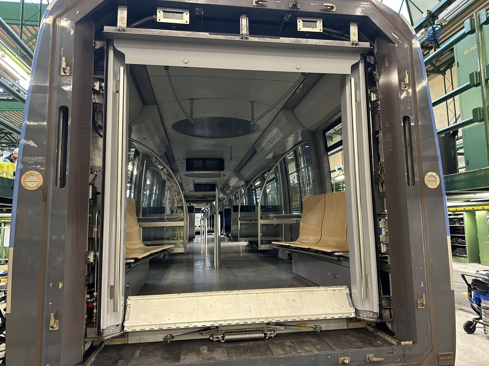

Blick durch die Wagentür: Sitzbänke, Haltestangen und Deckenverkleidung.
Bauteil auf der Seite „Innenraum“
Ergonomisch geformte, gepolsterte Sitzschalen mit Haltestangen aus Edelstahl. Die Reihenbestuhlung an den Wagenenden maximiert die Stehplatzkapazität für einen schnellen Fahrgastwechsel.
Bei der Konstruktion von Nahverkehrssitzen stehen andere Anforderungen im Vordergrund als im Fernverkehr: kurze Fahrzeiten, hoher Fahrgastwechsel und ein hoher Stehplatzanteil. Die Sitzschalen sind daher meist schmal, leicht gepolstert und mit robusten, leicht zu reinigenden Materialien bezogen.
Werkstoffseitig kommen brandschutzgeprüfte Textilien bzw. Kunstleder sowie ein Schalenkorpus aus glasfaserverstärktem Kunststoff oder Formsperrholz zum Einsatz – beides muss die strengen Brandschutznormen für Schienenfahrzeuge (u. a. EN 45545) erfüllen.